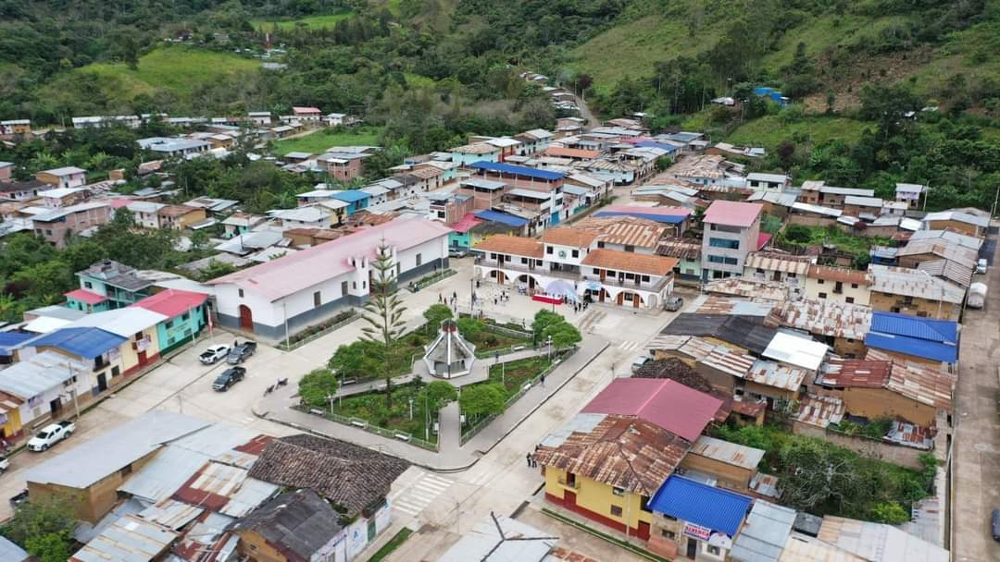

Bienvenido a Colasay
Explora la belleza natural y cultural de nuestro distrito.
Sobre Colasay
Colasay es un distrito ubicado en la provincia de Jaén, en el departamento de Cajamarca, al norte de Perú. Rodeado de montañas y una vegetación exuberante, es un lugar conocido por su belleza natural y su clima templado, ideal para aquellos que buscan conectarse con la naturaleza. Sus paisajes ofrecen una impresionante diversidad de flora y fauna, lo que convierte a Colasay en un destino perfecto para el ecoturismo y la observación de aves. En este distrito, la agricultura es una actividad fundamental, destacándose el cultivo de café de alta calidad, que ha ganado reconocimiento tanto a nivel nacional como internacional, contribuyendo al desarrollo económico de la zona.
El distrito mantiene una fuerte tradición cultural, con costumbres y festividades que reflejan la identidad de sus habitantes. A través de sus fiestas patronales, música, danzas y gastronomía, Colasay ofrece una rica experiencia cultural a quienes lo visitan. Durante las celebraciones, los visitantes pueden disfrutar hospitalidad de su gente, quienes mantienen vivas las tradiciones ancestrales. Además, su entorno rural y tranquilo lo convierte en un destino perfecto para quienes desean escapar del bullicio de las grandes ciudades y sumergirse en la vida rural de Cajamarca.
Con un alto valor ambiental y una ubicación privilegiada, Colasay es un lugar ideal para disfrutar de caminatas por sus paisajes, conocer más sobre la vida agrícola local y experimentar la calidez de su gente. Además de sus hermosos paisajes naturales, el distrito se caracteriza por su infraestructura amigable con el medio ambiente, ofreciendo a los turistas una experiencia auténtica y sostenible. Sin duda, Colasay es un destino que cautivará a quienes busquen una mezcla de naturaleza, cultura y tranquilidad
Leyenda del Piri PiriUbicación de Colasay
Encuentra la ubicación exacta del distrito de Colasay en el mapa interactivo a continuación.